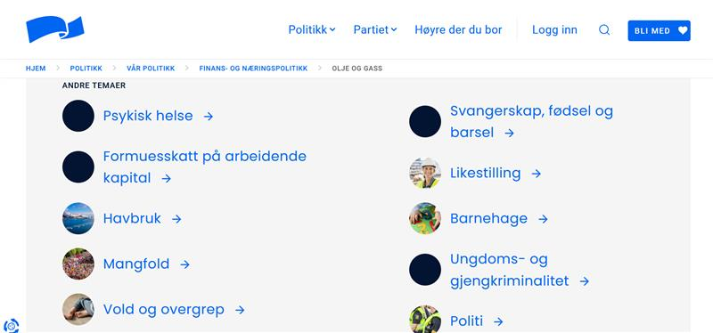
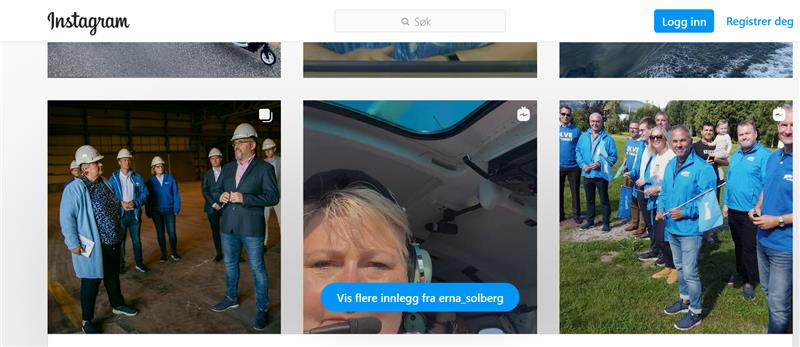
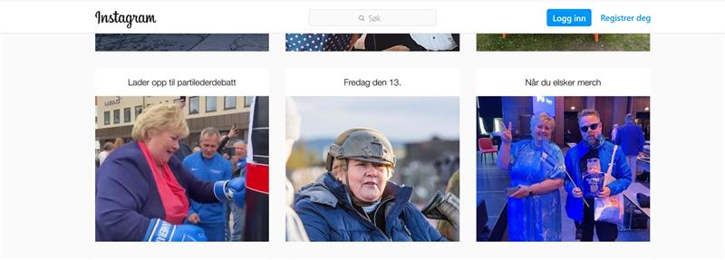
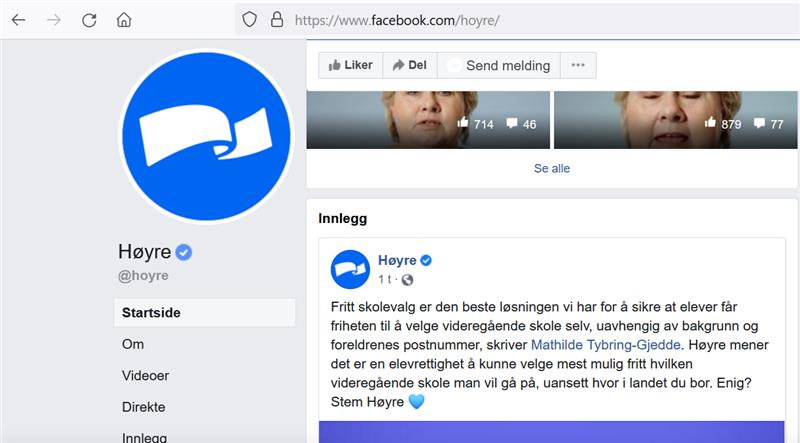
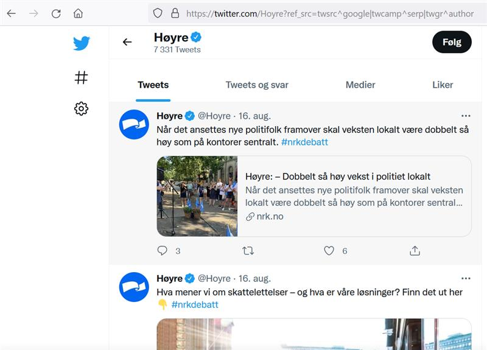

Tilbake til forrige nettside
Høyre på sosiale medier
Dette er Erna Solberg. Partileder for det politiske partiet høyre
og dagens statsminister (26. Aug 2021).
Dette er Lasse Fredheim som er partiets representant fra Rogaland
(26. Aug 2021).
På sin egen nettsiden skriver de om politikken deres mer detljert og når
ut til voksne.

Det er veldig troverdig innhold, all informasjon som er feilgitt blit
raskt retta opp i. Alle har noen feil i blant, men som regel så blir det
retta opp i.

Høyre har ingen offisiell konto for partiet på instagram, men det er en
"meme" konto som er høyre orientert og selve partileder har sin egen
konto.

Erna Solberg som er partileder for høyre har sin egen instagram konto.
Hun legger ut bilder og videoer som kan virke interessante for ungdom og
barn. Høyre politikken blir selvfølgelig fremstilt på sitt beste. Selv
om de som ser innlegget ikke er over 18 år kan det påvirke den
fremtidige stemmen deres.

Dette er et eksempel på hvordan partiet høyre bruker humor på instagram.

Høyre har sin egen facebook page. Ved bruk av Facebook når de til en
eldre aldersgruppe. De har per nå ca. 125 000 følgere på Facebook.

De er veldig aktive på Facebook, det blir lagt ut flere innlegg til
dagen. De reklamerer selvfølgelig for sin egen politikk. De poster om
forskjellige events og politikken deres. De poster mye når før valget,
og gjør det enkelt for leserne å lære om deres politikk.

Høyre poster ikke veldig mye på twitter, men du finner informasjon om
politikken deres.

Det er ingen offisiell Snapchat konto for partiet, men de har et filter
som folk kan bruke. På bilde nedenfor er det vist hvordan filteret ser
ut.

Det er ingen ofisiell konto for Høyre på tiktok.